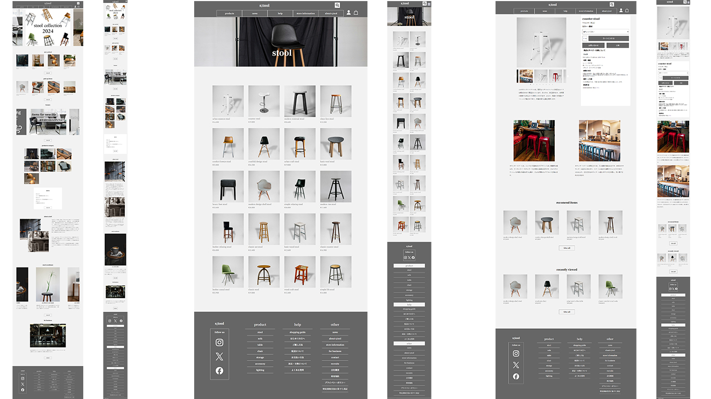
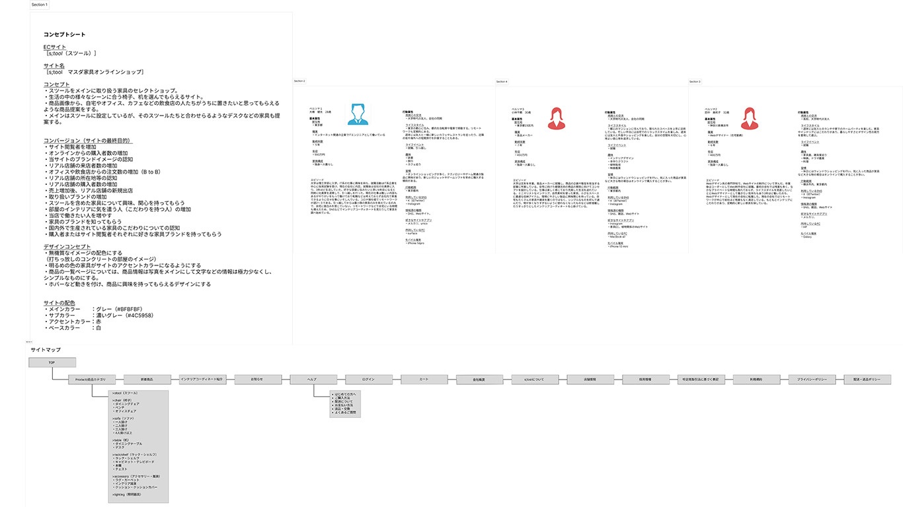
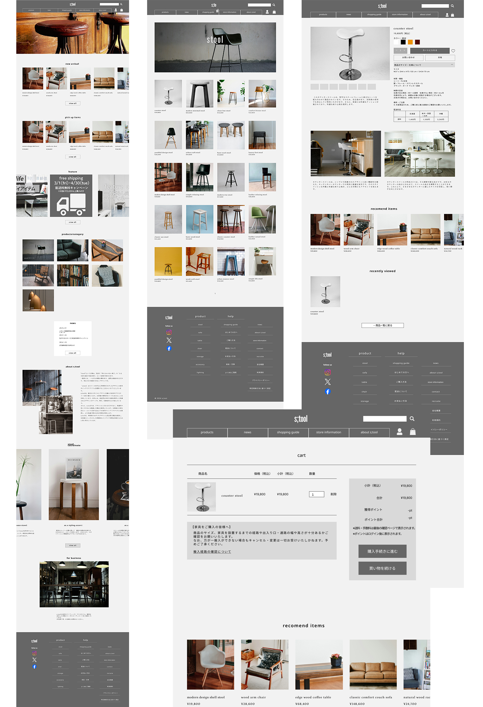

「s;tool」という架空のインテリアのECサイトを制作。コンセプト、ペルソナ設定、デザイン、ライティング、コーディングまでの一連の作業をすべて担当しました。ブランドイメージの認知と新製品の購入をサイトの目的とし、モダンな雰囲気のインテリアショップを制作しました。
URL
https://masudakoki.github.io/portfolio/two/index.html
サイトの目的
ブランドの認知及びサイト閲覧者の増加、スツールの認知拡大、オンラインショップからの購入者数の増加
ターゲット
20代半ば～30代の若い世代の男女、前の住居より広い部屋に引っ越しをしていて、インテリアに興味を持っている、または興味関心を持ち始めた男女。SNSなどでインテリア関連の情報を見るのが好きな人
デザインについて
商品の価格帯から少し高級感を感じるように、打ちっ放しのコンクリートの部屋のような無機質なイメージでモノトーンな配色のデザインにしています
商品写真はフリー素材のスツールの写真を収集し、Photoshopでスツールだけを切り取りグレーの背景に置くなど加工を行い、統一感を出すことによってスツール本体に目が行くように意識しています。
サイトの目的の一つをスツールの認知としており、スツールが椅子としてだけではなく、インテリアとしてや様々なシチュエーションで活用できることを知ってもらうことを目的にしており、それに合わせたそのほかのインテリアアイテムを見てもらえるサイトにしています。
フォントはserif体の書体を使用し、安っぽさが出ず品のある印象を与えることを意識しています。
コーディングについて
ユーザービリティの高いサイトを意識し、商品ページに誘導しやすくするため、トップページの前半に新着商品や注目商品を置来ました。商品写真をホバー時に明るくすることでユーザーがクリックしやすくなるように意識しています。
余白を均等にし、商品がディスプレイされているようなデザインにしており、「::before」や「::after」を使用してタブレット版など大きさが可変されても端数になってしまう最終列の商品が左寄席になるようにレイアウトしています。
「slick」や「vegas]など複数のJQueryを組み込み、シンプルなサイトながらも動きのあるデザインにしました。
担当
コンセプト立案（2時間）、ペルソナ設定（2時間）、サイトマップ制作（1時間）、ワイヤーフレーム制作（20時間）、商品写真選定及び加工（10時間）、デザイン・コーディング（30時間）、ロゴ、ファビコン制作（1時間）
使用ソフト
Figma、Photoshop、Illustrator、Premiere Pro、Visual Studio Code
figmaコンセプトシート
コンセプト、ペルソナをfigmaを使用しまとめました。コンセプトを作りこむことでデザインの軸がぶれないようにしています。

figmaデザインカンプ
コンセプト立案・ペルソナ設定後、figmaを使用してワイヤーフレームを制作しました。オートレイアウト機能を活用し、レスポンシブ対応可能なデザインにしました。
[figma ワイヤーフレーム、デザインカンプ]
